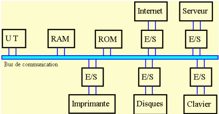
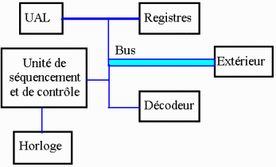

Le génie logiciel comprend les méthodes, les outils et les procédures pour concevoir des logiciels. Dans cette perspective, il importe de distinguer le matériel (hardware) du logiciel (software), pour lequel l'écriture du code est une conséquence naturelle de la conception d’un programme.
Le matériel est constitué de toutes les pièces physiques de la machine : écran, microprocesseur, clavier, modem, etc. Le logiciel désigne tous les programmes ou séries d'instructions utilisées pour faire opérer le matériel.
La complexité d'un ordinateur est telle que nous devons l'analyser sous la forme de sous-ensembles fonctionnels, sans nous attacher aux circuits qui composent la machine. Un ensemble ou bloc qui effectue un travail de traitement d'information est appelé un processeur. L'ordinateur est considéré comme un processeur qui contrôle d'autres processeurs (ceux des périphériques). On illustre cette définition avec le schéma suivant :
Avec ce schéma simplifié, l'unité centrale de traitement (UT) est un sous-ensemble fonctionnel permettant de traiter des données pour produire des résultats ou informations à la sortie. L'unité centrale de traitement opère sous le contrôle d'un programme, lequel est constitué d'instructions.
Le synoptique suivant est simplifié, car il est possible qu'il y ait plus d'une UT, plus d'un bus, etc.

Le matériel se divise en trois classes :
La RAM (random access mémory) est la mémoire adressable de l'ordinateur, ou mémoire vive. Elle est utilisée pour ranger le programme et les données qui l'accompagnent. Lorsque l'on achète un ordinateur, c'est le type de mémoire que spécifie le devis, par exemple, un Pentium à 5 Ghz et 512 Mo de mémoire avec un disque de 80 Go. La mémoire est habituellement vendue en ko pour la mémoire cache et en Mo pour la mémoire RAM. C'est une mémoire «dynamique» à maintenir en vie 60 fois par seconde. Elle perd l'information à la mise hors tension.
La ROM (Read only memory) est la mémoire permanente de l'ordinateur; elle contient la configuration de l'ordinateur (Bios) ainsi que les programmes permettant des opérations spécifiques, par exemple, la vérification des mémoires lors du lancement, les programmes d'accès au disque dur, etc. Il est impossible de la modifier à moins d'utiliser des moyens spéciaux. Par contre, la RAM est effacée à chaque fois que l'ordinateur est mis hors tension.
Le microprocesseur ou unité de traitement (UT) (micro processing unit ou MPU) traite les données et régit le mouvement de l'information vers les sous-ensembles. Pour un PC, c'est le Pentium qui forme le cœur de l'ordinateur. D'une manière générale, le microprocesseur se divise en plusieurs sous-ensembles :

Le microprocesseur reçoit la cadence d'une horloge. L'unité de séquence et de contrôle dirige les opérations et donne suite aux instructions reçues. Ces dernières passent par des circuits de commande dont le rythme suit le battement de l'horloge qui synchronise ainsi toutes les opérations. La vitesse de l'horloge est habituellement donnée en GHz; plus la vitesse est rapide et plus le microprocesseur est performant. Cette caractéristique permet de comparer les microprocesseurs entre eux. Cependant, il faut considérer aussi les autres composantes du microprocesseur. Souvent la cadence est trop rapide pour le bus, et il faut introduire des temps d'attente pour synchroniser correctement les informations qui transitent sur le bus (wait states).
Une caractéristique du microprocesseur est le nombre d'instructions qu'il peut faire en un temps défini, mesuré en MIPS (million d'instructions par seconde). Cependant, chacune des instructions reçues par le microprocesseur est décodée en une série de micro-instructions par le décodeur. Ainsi, une instruction reçue peut comporter plusieurs micro-instructions. Une micro-instruction prend un cycle d'horloge pour son exécution. Une instruction peut donc prendre plusieurs cycles d'horloge pour sa réalisation.
Utiliser uniquement la vitesse de l'horloge comme critère de comparaison entre les microprocesseurs donne des résultats inexacts. Dans les applications comprenant du calcul scientifique, il est plus juste d'utiliser le mégaflop (million d'opérations à point flottant par seconde) pour comparer les microprocesseurs que le concept trompeur de MIPS.
Les registres sont les mémoires internes du microprocesseur qui lui servent de brouillon et par lesquelles transitent le plus souvent les données. L'unité arithmétique et logique (UAL ou ALU) est chargée d'exécuter les opérations arithmétiques et logiques des programmes.
Les instructions et les données transitent dans l'ordinateur par un bus. C'est une sorte d'autoroute à plusieurs voies parallèles. Un bus de 32 bits de largeur indique que la communication s'effectue 32 bits à la fois sur un circuit qui possède 32 fils (ou voies) en parallèle. Plus il y a de voies, et plus la performance du microprocesseur augmente.
Les caractéristiques d'un ordinateur évoluent sans cesse. Il est difficile d'exprimer une opinion correcte. Par contre, certains éditeurs émettent régulièrement une opinion dépourvue d'intérêt commercial et qui constitue une bonne base de comparaison telle que : http://www.atoutmicro.ca.
Les logiciels dont regroupés en quatre grandes classes : systèmes d'exploitation, langages, progiciels, éditeurs-compilateurs-interprètes.
Tous ces langages nécessitent :
La traduction génère un fichier binaire (*.obj). Par la suite, un linkeur lie les fichiers *.obj à des routines pour produire un fichier exécutable (*.com ou *.exe).
Matlab est un interprète. Lorsqu'il interprète une première fois une fonction, il conserve le résultat de la compilation en mémoire. Un appel subséquent s'exécute alors aussi rapidement qu'une routine compilée par la méthode classique (compilateur et linkeur). C'est de cette manière que Matlab s'approche des performances d'un compilateur.
C'est une bonne raison pour organiser un programme Matlab en fonctions.